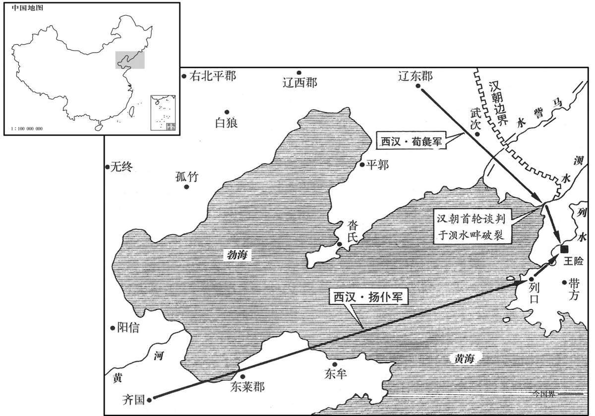
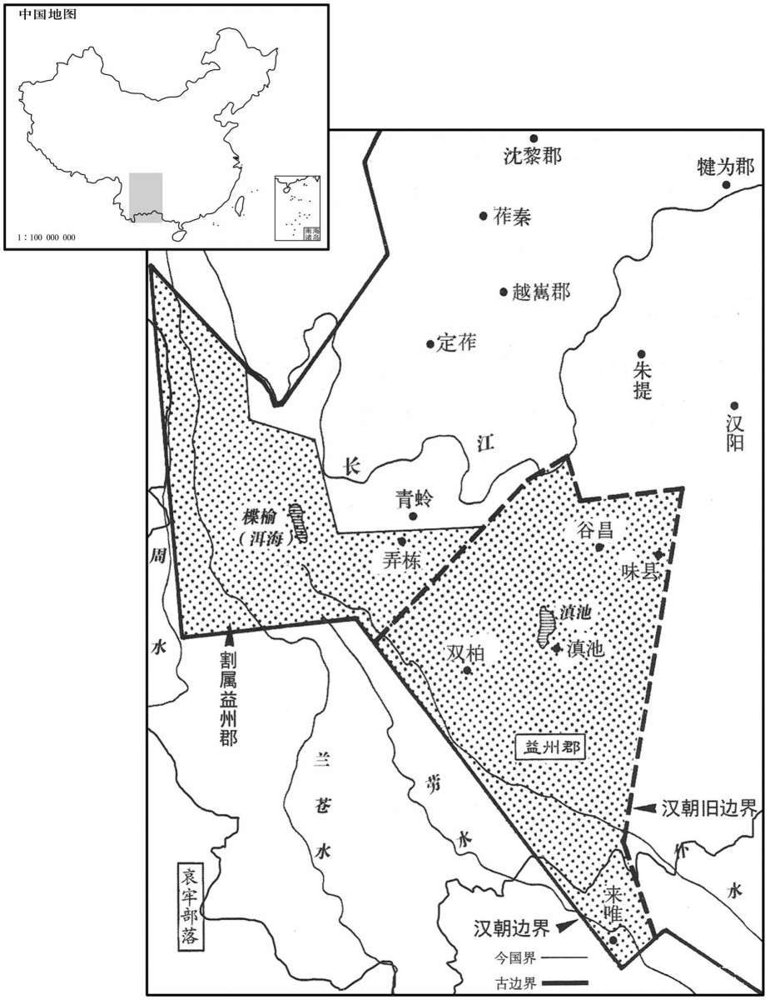
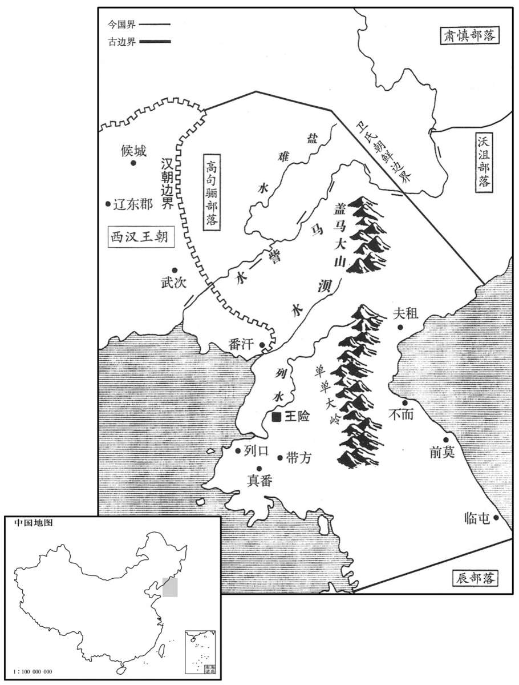

公元前109年资治通鉴：本年记事、原文与白话对照
按原书编年位置阅读；追叙和史论不等于本年发生的事件。白话采用所据译本，缺译不以生成译文补齐。
卷21 · 本年记事
公元前109年 · 汉世宗孝武皇帝元封二年
元封二年〔（壬申、前一○九）〕
本年事件索引（现代整理）

本年形势与背景参考图

本年形势与背景参考图
冬，十月，上行幸雍，祠五畤，还，祝祠泰一，以拜德星。〔师古曰：拜而祠之，加祝辞。〕
冬季，十月，汉武帝巡幸至雍，祭祀于五；回长安后，祭祀泰一神，并叩拜“德星”。
春，正月，公孙卿言：“见神人东莱山，若云欲见天子。”天子于是幸缑氏城，〔缑，工侯翻。〕拜卿为中大夫，遂至东莱，宿留之，数日，无所见，〔宿留，音秀溜。〕见大人迹云。复遣方士求神怪，采芝药，以千数。〔复，扶又翻。〕时岁旱，天子既出无名，乃祷万里沙。〔应劭曰：万里沙神祠也，在东莱曲城。孟康曰：沙径三百余里。杜佑通典：万里沙在莱州掖县界。〕夏，四月，还，过祠泰山。
春季，正月，公孙卿报告说：“在东莱山看到神仙，他好像说要见天子。”于是汉武帝前往缑氏城，封公孙卿为中大夫，到东莱住了几天，却未见到神仙，只看到了巨人的足迹。汉武帝又派出数以千计的方士去寻访神，采摘灵芝。当时正逢旱灾，汉武帝外出巡游没有理由，便去祭祀万里沙神庙。夏季，四月，返回长安，中途祭祀泰山。
初，河决瓠子，〔河始决见十八卷元光二年。〕后二十余岁不复塞，〔复，扶又翻。塞，悉则翻；下同。〕梁、楚之地尤被其害。〔被，皮义翻。〕是岁，上使汲仁、郭昌二卿发卒数万人塞瓠子河决。天子自泰山还，自临决河，沈白马、玉璧于河，〔沈，持林翻。〕令群臣、从官自将军以下皆负薪，卒填决河。〔从，才用翻。卒，子恤翻。〕筑宫其上，名曰宣防宫。导河北行二渠，复禹旧迹，〔沟洫志：禹导河自积石，历龙门，南到华阴，东下底柱及孟津、洛、汭，至于大伾。于是禹以为河所从来者高，水湍悍，难以行平地，数为败，乃酾二渠以引其河，北载之高地，过洚水，至于大陆，播为九河，同为迎河入勃海。孟康曰：二渠，其一出贝丘西南，南折者也；其一则漯川也。河自王莽时遂空，惟用漯耳。酾，山支翻。漯，吐合翻。〕而梁、楚之地复宁，无水灾。
先前，黄河在瓠子决口，后二十多年未将决口堵塞，梁、楚一带地方受害最深。本年，汉武帝派大臣汲仁、郭昌二人征调数万人堵塞瓠子决口。汉武帝从泰山回长安途中，亲自到黄河决口处视察，将白马、玉璧沉入河中，命随驾群臣和扈从官员自将军以下一律背负柴薪，终于将决口堵住。汉武帝命人在原决口处兴建宫室一座，名叫宣防宫；又开挖两条渠道，将黄河导入北行的两条河渠，恢复大禹治水时的旧状，梁、楚地区又安宁了，从此不受水灾之害。
上还长安。
汉武帝回到长安。
初令越巫祠上帝、百鬼，而用鸡卜。〔越俗用鸡卜。李奇曰：持鸡骨卜，如鼠卜。史记正义曰：鸡卜法，用鸡一狗一，生祝愿讫，即杀鸡狗，煮熟又祭，独取鸡两眼骨，上自有孔，裂似人物形则吉，不足则凶。今岭南犹行此法。范成大桂海虞衡志：鸡卜，南人占法，以雄鸡雏执其两足，焚香祷所占，扑鸡杀之，拔两股骨，净洗，线束之，以竹筳插束处，使两骨相背于筳端，执竹再祝。左骨为侬，侬，我也。右骨为人，人，所占事也。视两骨之侧所有细窍，以细竹筳长寸余插之，斜直偏正，各随窍之自然，以定吉凶。法有十八变，大抵直而正、或近骨者多，吉；曲而斜、或远骨者多，凶。亦有用鸡卵卜者，握卵以卜，书墨于壳，记其四维；煮熟横截，视当墨处，辨壳中白之厚薄以定侬、人吉凶。〕
汉武帝开始命令越族巫师祭祀上帝和众鬼，并使用鸡骨进行占卜。
公孙卿言仙人好楼居，〔好，呼到翻。〕于是上令长安作蜚廉、桂观，甘泉作益寿、延寿观，〔应劭曰：蜚廉，神禽名，能致风气。晋灼曰：身似鹿，头如爵，有角，而蛇尾，文如豹文。“桂观”，汉志作“桂馆”。师古曰：蜚廉、桂馆、益寿、延寿，四馆名。观，古玩翻。〕使卿持节设具而候神人。又作通天茎台，〔通天台在甘泉宫。汉旧仪曰：台高五十丈，去长安二百里，望见长安城。〕置祠具其下。更置甘泉前殿，益广诸宫室。
据公孙卿说，神仙喜欢住在楼中，于是汉武帝命人在长安兴建蜚廉观、桂观，在甘泉兴建益寿观、延寿观，派公孙卿携带皇帝符节，布置好全部设备，恭候神仙降临。又兴建通天茎台，在台下摆设祭祀器具，兴建甘泉宫前殿，并对其他各处宫室进行扩建。
初，全燕之世，尝略属真番、朝鲜，〔徐广曰：辽东有番污县。应劭曰：玄菟本真番国。番，普安翻。张晏曰：朝鲜有湿水、洌水、汕水三水，合为洌水。疑乐浪、朝鲜取名于此。括地志：高丽都平壤城，本乐浪郡王险城；又古云朝鲜。索隐曰：按朝，音潮，直骄翻。鲜，音仙，以有汕水故也。汕，一音讪。〕为置吏，筑障塞。〔为，于伪翻；下同。〕秦灭燕，属辽东外徼。〔徼，吉吊翻。〕汉兴，为其远难守，复修辽东故塞，至浿水为界，〔班志，浿水出辽东塞外，西南至乐浪县西入海。水经：浿水出乐浪镂方县，东南过临浿县，东入海。郦道元注曰：满自浿水而至朝鲜，若浿水东流，无渡浿之理。余访蕃使，言城在浿水之阳，其水西流，迳乐浪郡朝鲜县，故志曰浿水西至增地县入海，经误。浿，普盖翻，又滂沛翻，普大翻。杜佑曰：浿，滂拜翻。〕属燕。燕王卢绾反，入匈奴。〔见十二卷高祖十三年。〕燕人卫满亡命，聚党千余人，椎髻、蛮夷服而东走出塞，渡浿水，居秦故空地上下障，稍役属真番、朝鲜蛮夷及燕亡命者王之，〔王，于况翻。〕都王险。〔韦昭曰：王险，故邑名。应劭曰：辽东有险渎县，即满所都，因水险，故曰险渎。臣瓒曰：王险在乐浪郡浿水之东。师古曰：瓒说是。贤曰：即平壤城。〕会孝惠、高后时，天下初定，辽东太守即约满为外臣，保塞外蛮夷，无使盗边；诸蛮夷君欲入见天子，勿得禁止。〔见，贤遍翻；下同。〕以故满得以兵威财物侵降其旁小邑真番、临屯，皆来服属，〔临屯，帝后开为郡。注见下三年。降，户江翻。〕方数千里。传子至孙右渠，所诱汉亡人滋多，又未尝入见；〔诱，音酉。见，贤遍翻；下同。〕辰国欲上书见天子，又雍阏不通。〔师古曰：辰国，即辰韩之国雍，读曰壅。阏，一曷翻。〕是岁，汉使涉何诱谕，〔涉，姓也。左传晋有大夫涉佗。〕右渠终不肯奉诏。何去至界上，临浿水，使御刺杀送何者朝鲜裨王长，〔刺，七亦翻。〕即渡，驰入塞，遂归报天子曰：“杀朝鲜将。”上为其名美，〔将，即亮翻。为，于伪翻；下同。〕即不诘，拜何为辽东东部都尉。〔辽东东部都尉治武次县。〕朝鲜怨何，发兵袭攻杀何。
当初，燕国全盛之时，曾经占领真番、朝鲜为属地，设置官吏，修筑边防要塞。秦灭掉燕国之后，这一带成为辽东郡的外部边界。汉朝兴起后，因该地遥远，难于守御，所以只重修了辽东地区的原有边塞，以水作为边界，属燕国管辖。燕王卢绾谋反，逃入匈奴，燕国人卫满聚集亲信一千余人，头梳发髻，身穿蛮夷服装向东逃出边塞，渡过水，占据秦时旧有空地，自立为王，逐渐将真番、朝鲜的蛮夷部族和从燕国逃出的人归于自己的统治之下，建都王险。到汉惠帝、汉高后时期，因天下刚刚安定不久，崐辽东太守便与卫满约定：由卫满作为汉朝的外臣，保护汉朝边塞之外的蛮夷部族不对汉朝边塞进行侵扰；如果各蛮夷部族的首领要到汉朝晋见天子，卫满不得禁止。因此，卫满得以利用兵威和财物侵略和降服周围弱小部族，真番、临屯都来臣服归属，使其统治地域扩大到方圆数千里。王位传到卫满的孙子卫右渠时，卫氏朝鲜招降的汉朝逃亡之人越来越多，而卫右渠又从来未到长安朝见过汉朝天子；辰国国君想要上书汉朝，晋见汉天子，也因卫氏朝鲜的阻隔而不得通行。汉朝于本年派使臣涉何前去劝诱并卫右渠，但卫右渠却到底不肯接受诏令。涉何离开朝鲜，来到边界，在水河边，命驾车人将护送他的朝鲜副王长刺杀，然后立即渡过水，驰入汉朝边塞，回来报告汉武帝说：“杀死了朝鲜将领。”汉武帝认为他有杀朝鲜人的美名，未加责问，任命他为辽东东部都尉。朝鲜怨恨涉何，派兵攻击辽东，将涉何杀死。

六月，甘泉房中产芝九茎，〔时芝产于甘泉斋房，九茎连叶。论衡：芝生于土，土气和则芝草生。瑞命记：王者慈仁则芝草生。〕上为之赦天下。
六月，甘泉宫斋房中长出九茎灵芝。为此，汉武帝下令大赦天下。
上以旱为忧，公孙卿曰：“黄帝时，封则天旱，干封三年。”上乃下诏曰：“天旱，意干封乎！”〔干，音干。〕
汉武帝因为旱灾而忧虑，公孙卿说：“黄帝时，封祀后便出现大旱，使封土干了三年。”汉武帝于是颁布诏书说：“天旱，意旨是要使封土干吧！”
秋，作明堂于汶上。〔班志，泰山郡莱芜县。禹贡：汶水出西南入济。桑钦所言又曰：琅邪郡朱虚县东泰山，汶水所出，东至安丘入潍；有五帝祠。师古曰：前言汶水出莱芜入济，此又言出朱虚入潍，将桑钦所言有异，或者有二汶水乎？余据班志，明堂在泰山奉高县西南四里；又禹贡，“浮于汶，达于济”；此明堂当在济之汶上。琅邪之汶入于潍，而潍入于海，其地僻远，非立明堂处。汶，音问。〕
秋季，在汶水边兴建明堂。
上募天下死罪为兵，遣楼船将军杨仆从齐浮渤海，〔仆从齐浮渤海。盖自青、莱以北，幽、平以南，皆滨于海，其海通谓之渤海，非指渤海郡而言也。〕左将军荀彘出辽东，以讨朝鲜。
汉武帝下令招募天下犯有死罪的人当兵，由楼船将军杨仆率领，从齐国渡渤海，左将军荀彘从辽东出发，征讨朝鲜。
初，上使王然于以越破及诛南夷兵威喻滇王入朝。滇王者，其众数万人，其旁东北有劳深、靡莫，皆同姓相杖，未肯听。〔杖，直亮翻。〕劳深、靡莫数侵犯使者吏卒。〔数，所角翻。〕于是上遣将军郭昌、中郎将卫广发巴、蜀兵击灭劳深、靡莫，以兵临滇。滇王举国降，请置吏入朝，于是以为益州郡，〔续汉志：益州郡去雒阳五千六百里。魏、晋为南中、宁州之地，唐为昆州、姚州之地，后没于南诏。师古曰：唐南宁州、昆州、裒州也。降，户江翻。朝，直遥翻。〕赐滇王王印，复长其民。〔复，扶又翻，又如字。长，丁丈翻。〕
当初，汉武帝派王然于利用南越败亡的事例和诛平南夷的兵威劝告滇国国王入朝归附。滇王拥有数万部众，邻近的东北方又有与之同姓的劳深、靡莫两国相互支持，所以不肯听从汉朝。劳深、靡莫两国还多次侵袭汉朝使臣部下。于是汉武帝派将军郭昌、中郎将卫广征调巴、蜀地区的军队灭掉劳深、靡莫两国，兵临滇国。滇王举国投降，请求汉朝派置官吏，并亲自入朝。汉朝在该地设置益州郡，并赐给滇王王印，命他继续管辖他的百姓。
是时，汉灭两越，平西南夷，置初郡十七，〔臣瓒曰：元鼎六年，定南越地，以为南海、郁林、苍梧、合浦、九真、日南、交趾、珠厓、儋耳郡；定西南夷，以为武都、牂柯、越巂、沈黎、汶山郡；及地里志、西南夷传所置犍为、零陵、益州郡，凡十七。〕且以其故俗治，毋赋税。南阳、汉中以往郡，各以地比，给初郡吏卒奉食、币物、传车、马被具。〔师古曰：地比，谓依其次第，自近及远。比，频寐翻。奉，扶用翻。传，张恋翻。被，皮义翻。〕而初郡时时小反，杀吏，汉发南方吏卒往诛之，间岁万余人，费皆仰给大农。大农以均输、调盐铁助赋，故能赡之。然兵所过，县为以訾给毋乏而已，〔訾，读曰资。〕不敢言擅赋法矣。〔帝初击胡，大司农赋税专以奉战士，故有擅赋之法。〕
此时，汉朝先后灭掉了南越和东越两国，剿平了西南夷各部族，新增设了十七个郡，并仍按当地原有风俗习惯进行治理，不征收赋税。南阳、汉中等旧有各郡，则各根据距离的远近，为新设各郡的官吏和兵卒提供粮食、钱物、邮传车、马匹及配件用具。由于新设各郡时常发生小规模叛乱，杀死官吏，汉朝便征调南方各郡的官吏兵卒前往镇压，过了一年达一万多人，所需费用全部依靠大农。大农靠调剂各地的物资和盐、铁专卖的所得，补充赋税的不足，所以还可以供应。然而军队所过之处，地方官府供应军需，只不使缺乏而已，不敢再提专有赋税的法令了。
是岁，以御史中丞南阳杜周为廷尉。〔姓谱：杜本陶唐氏刘累之后，在周为唐杜氏，有杜伯。〕周外宽，内深次骨，〔李奇曰：其用法深刻至骨。〕其治大放张汤。〔言大抵依放张汤也。放，甫往翻。〕时诏狱益多，二千石系者，新故相因，不减百余人；廷尉一岁至千余章，〔章者，诸狱告劾之书，上之廷尉者也。〕章大者连逮证案数百，小者数十人，远者数千、近者数百里会狱。〔师古曰：往赴对也。〕廷尉及中都官诏狱逮至六七万人，〔师古曰：中都官，凡京师诸官府也；狱辞所及进考问者六七万人也。〕吏所增加，十万余人。〔师古曰：吏又于此外以文致之更增也。〕
这一年，汉武帝任命御史中丞南阳人杜周为廷尉。杜周外表宽厚，内心却苛刻至极，对事情的处理基本上效法张汤。当时，长安诏狱的犯人日益增多，二千石官被逮捕囚禁的，旧的未去，新的已来，不下一百余人；廷尉一年要处理的案件达到一千余件。一件大案，受牵连被逮捕或作证的人有几百，小案也有数十人；远的数千里，近的数百里，都要前来对质。廷尉和京中各官府崐因办理皇帝交下的案狱而逮捕的人达六七万人，再经过法官狱吏的牵连攀扯，增加到十万余人。